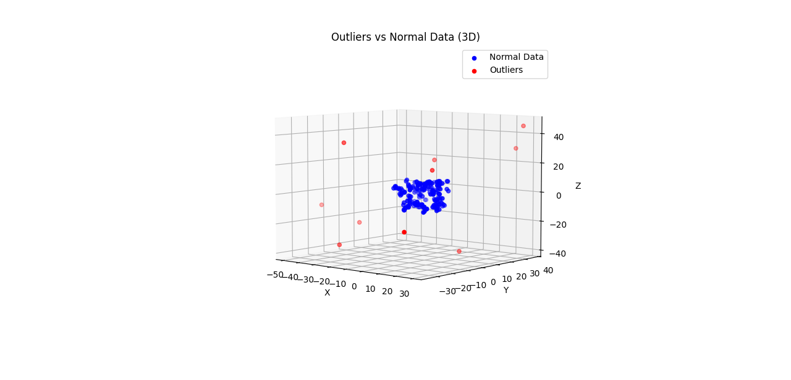

Introduction
A Python library for multi-dimensional data outlier and anomaly detection using advanced machine learning algorithms.
Publications
- "Outlier Detection Using Vector Cosine Similarity by Adding a Dimension" – Published in ICAIIC 2024 (DOI: 10.1109/ICAIIC60209.2024.10463442)
Installation
-
Via pip:
pip install mdod
Or via GitHub:
git clone https://github.com/mddod/mdod.git cd mdod python setup.py install
Usage Example
-
Download testmdodmodelv3.py
-
PS D:\mdod> python testmdodmodelv3.py
Data generation failed after 1000 attempts. Scaled data to fit within 1.0.
Generate data: 1000 Sample, 2 Dimension, 150 Outliers
Generated data has been saved to 'generated_data.csv'
Use sampling rate: 0.05
MDOD Decision Score (Top 10):
[-18.31559252 -19.31589488 -18.95489266 -19.27465188 -19.38318373
-19.02271112 -19.5686593 -19.2839105 -18.60204328 -18.33769728]
MDOD Predicted Labels (Number of Anomalies): 150
MDOD AUC: 1.0
MDOD Runtime: 0.002752 seconds
MDOD Confusion Matrix:
[[850 0]
[ 0 150]]
MDOD Precision: 1.0000
MDOD Recall: 1.0000
MDOD F1-Score: 1.0000
LOF Decision Score (Top 10):
[1.25375406 1.01080138 1.11113192 1.0219336 1.03138014 1.10677047
0.96855755 0.99321085 1.17408394 1.30132643]
LOF Predicted Labels (Number of Anomalies): 150
LOF AUC: 1.0
LOF Running time: 0.011232 seconds
LOF Confusion Matrix:
[[850 0]
[ 0 150]]
LOF Precision: 1.0000
LOF Recall: 1.0000
LOF F1-Score: 1.0000
Comparison results:
Spearman correlation coefficient: 0.9244 (p-value: 0.0000)
MDOD AUC: 1.0000, LOF AUC: 1.0000
Algorithm Complexity Comparison (Empirical Running Time)：MDOD 0.002752s vs LOF 0.011232s
Test Data Comparison (Top 10 Rows):
Feature_1 Feature_2 True_Label MDOD_Score MDOD_Label LOF_Score LOF_Label
0 0.236384 0.463173 0.0 -18.315593 0 1.253754 0
1 -0.231236 0.046397 0.0 -19.315895 0 1.010801 0
2 0.089341 0.378934 0.0 -18.954893 0 1.111132 0
3 -0.289616 0.078549 0.0 -19.274652 0 1.021934 0
4 0.252438 -0.010620 0.0 -19.383184 0 1.031380 0
5 0.374958 0.164868 0.0 -19.022711 0 1.106770 0
6 0.037580 0.167901 0.0 -19.568659 0 0.968558 0
7 -0.230299 -0.145481 0.0 -19.283910 0 0.993211 0
8 0.003694 0.429171 0.0 -18.602043 0 1.174084 0
9 -0.449619 -0.343795 0.0 -18.337697 0 1.301326 0
The complete data has been saved to 'test_data_comparison.csv'
Test output data has been saved to 'test_output_data.csv'
libpng warning: iCCP: cHRM chunk does not match sRGB
libpng warning: iCCP: cHRM chunk does not match sRGB
-
Download testmdod_simple_example_en.py read data from csv file.
-
D:\mdodtest>
D:\mdodtest>
D:\mdodtest>
D:\mdodtest>py testmdod_simple_example_en.py
Number of features: 2
Number of samples: 1000
Number of outliers: 150
Data saved to: testmdod_simple_example_output_data.csv
Sampling rate used: 0.05
MDOD runtime: 0.0797 seconds
MDOD decision scores (top 10 - highest values):
[-6.62289984 -6.77322132 -6.92891522 -7.18871113 -7.23625849 -7.24312221
-7.31773667 -7.32676678 -7.33133378 -7.33982723]
MDOD decision scores (bottom 10 - lowest values):
[-19.84866083 -19.82038598 -19.82010554 -19.80062169 -19.80051546
-19.76201034 -19.76181435 -19.75729718 -19.75229983 -19.74520579]
Additional Examples
- Random 2D Data

- Random 3D Data
